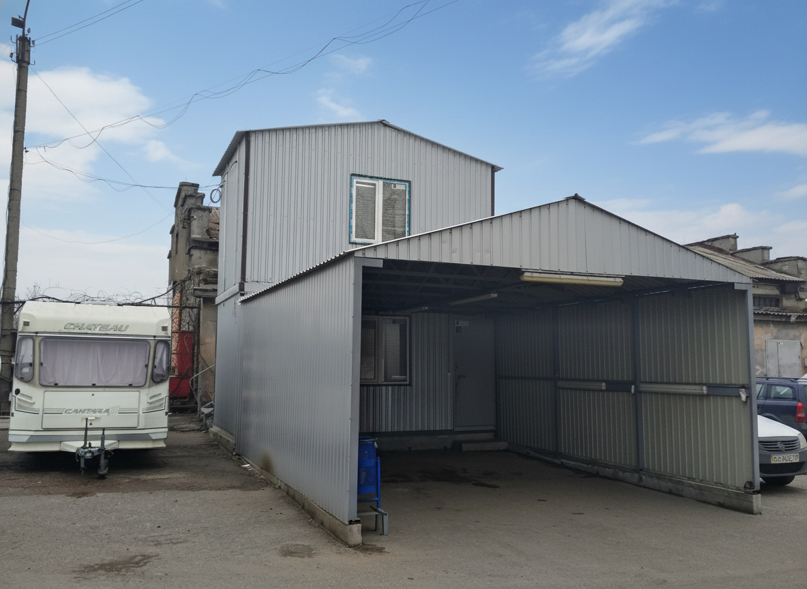
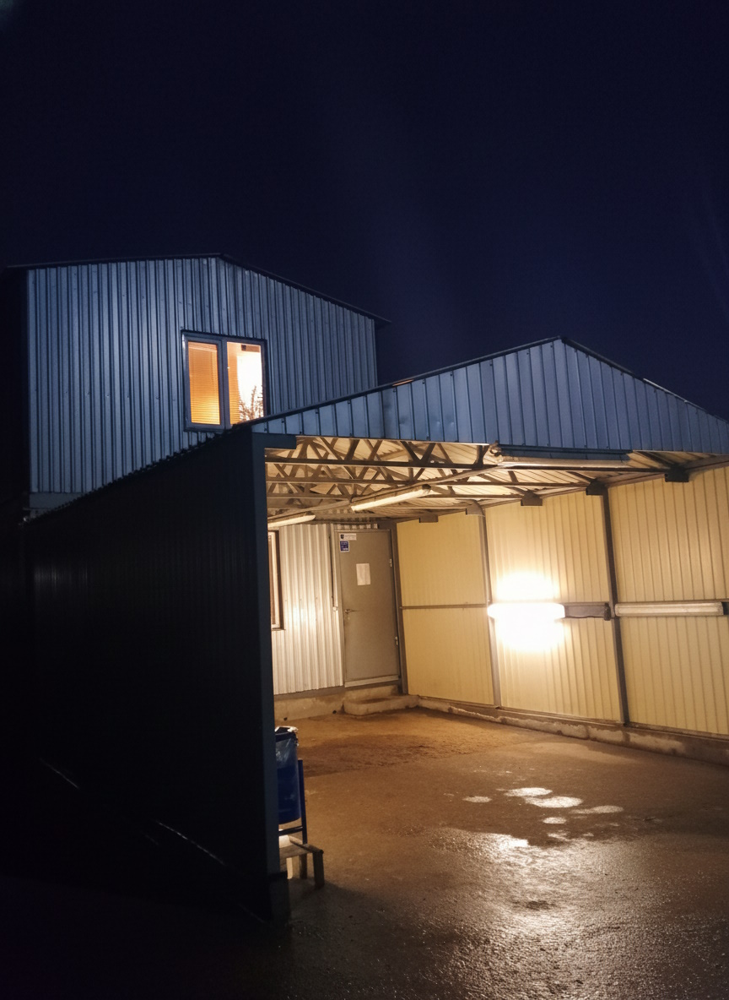
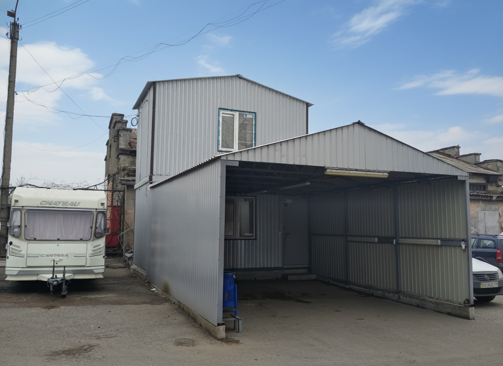
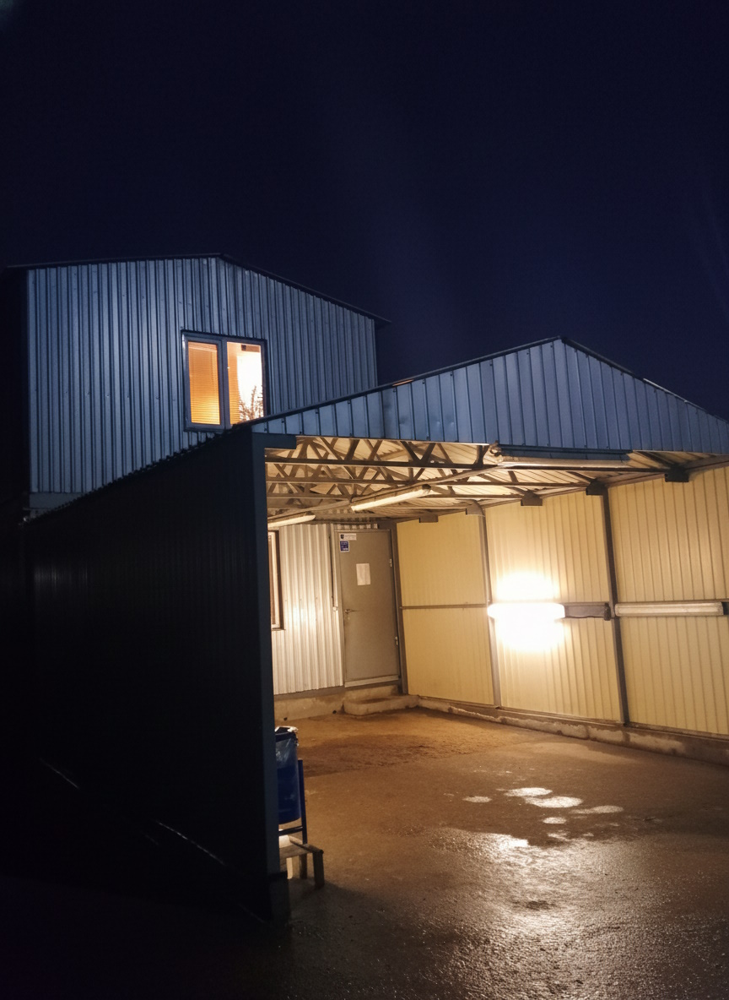

← Zurück zu Container & Modulbau
Zweigeschossiges Modulgebäude mit Technik- und Büroräumen
Zweigeschossiger Modulbau, bei dem das Erdgeschoss als Technik- und Büroraum für Verwaltung genutzt wird und das Obergeschoss als Büro für die Geschäftsleitung dient. Die Außentreppe auf der Rückseite erschließt das obere Geschoss, ohne den Technikbereich im Erdgeschoss zu stören.
Vor dem Gebäude befindet sich eine überdachte Zone, die sich ideal für die Vorprüfung oder Übergabe von Fahrzeugen eignet. Der Modulbau wurde in kurzer Zeit realisiert – Grundriss, Raumaufteilung und Innenausbau konnten schnell abgestimmt und angepasst werden. Im Vergleich zu klassischem Neubau bietet diese Lösung eine deutlich schnellere Umsetzung und bleibt bei späteren Änderungen flexibel.
Bilder zum Projekt
 



Ähnliches Modulgebäude in Zürich oder Umgebung planen?
Wenn Sie in Zürich, im Kanton Zürich oder in der Schweiz ein ähnliches zweigeschossiges Modulgebäude für Büro, Technik oder Verwaltung planen, kontaktieren Sie uns über das Kontaktformular, über den schwarzen Button „E-Mail schreiben“ oder direkt per WhatsApp. Sie können eine Skizze (auch handgezeichnet) anhängen und kurz beschreiben, wofür Sie das Gebäude benötigen – wir melden uns zeitnah mit Vorschlägen und einer möglichen Umsetzung.